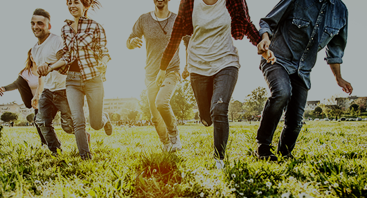
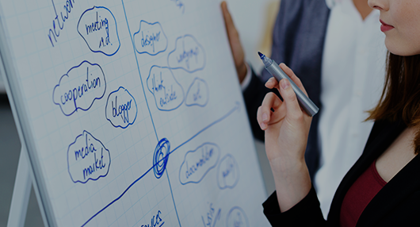
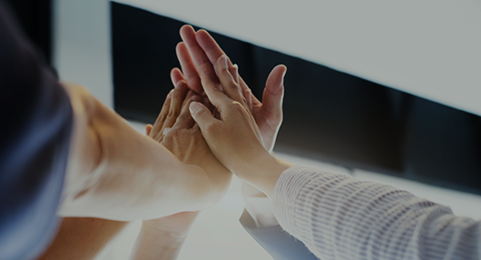

인재상

- OPEN-MIND
- 열린 사고
-
열린사고를 가진 사람은 열린 마음과 태도로 변화를 적극적으로 수용하고 만들어갈 수
있습니다. 세상 전부는 연결되었기 때문에 다름에 대한 닫힌 사고가 아닌, 수용할 수
있는 열린 사고가 성장의 동력입니다.
- OPROFESSIONAL
- 프로•최고 정신
-
프로/최고 정신은 지금보다 더 나은 방법이 있을 거라 항상 생각하는 것입니다. 20번,
30번을 반복해도 더 좋은 결과를 위해 노력할 수 있는 끈기와 최고 수준을 향한 집요함이
필요합니다.

- PROBLEM SOLVING
- 체계적인 문제해결능력
-
체계적인 문제 해결이란, 처음부터 문제가 발생되지 않도록 설계하는 문제 발생의
원천봉쇄입니다. 그럼에도 불구하고 문제가 발생되면 대중요법으로 대처하는 것이
아니라, 전체적인 관점으로 시작하여 근본 원인을 끝까지 밝혀내 해결하는 것을
의미합니다.

- OCHALLENGE•PIONEER SPIRIT
- 도전ㆍ개척정신
-
도전/개척정신은 거친 환경 속에서도 성취해 낼 수 있는 조건을 만들어가는 투지입니다.
조건에 의해 자신이 한계를 결정하기보다는, 자신이 조건을 만들어가는
도전의식이야말로 이랜드서비스에서 실력을 발휘할 수 있는 '최우선 조건'입니다.